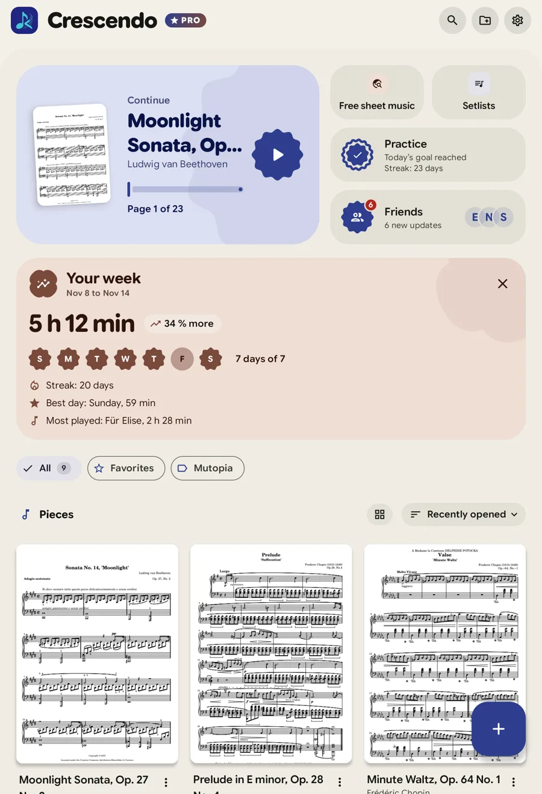
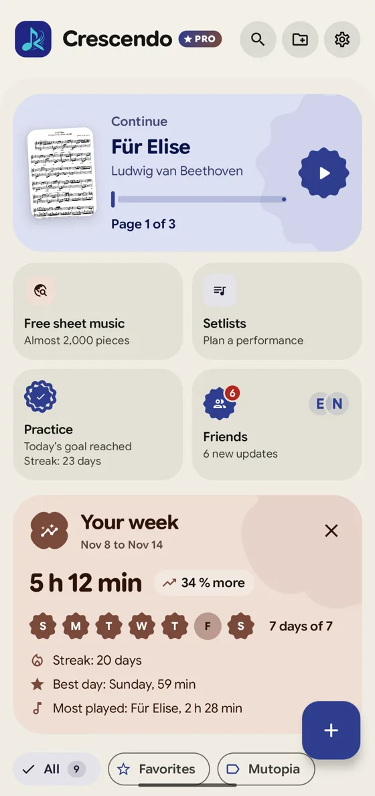

Crescendo brings your sheet music, practice and music friends together. Read and annotate your scores, explore almost 2,000 free pieces and build a practice streak – day by day.
Import PDFs, scan paper sheet music or download a free piece. Crescendo remembers exactly where you left off.
Continue right where you stopped
Favorites, folders and setlists
The same library on phone and tablet
2Read & annotate
A calm reader that writes back
Full-screen sheet music with your marks right on it – fingerings, highlights and dynamics.
Turn pages by tap, pedal or a tilt of your head
Pen, highlighter and dynamics stamps
Great with a stylus or your finger
3Listen
Hear it. See it. Play it.
Many free pieces come with a recording and a falling-notes visualizer that shows exactly what you hear.
Piano visualizer (Pro)
Slow it down to learn
Connect a digital piano by USB or Bluetooth
4Practice
Practice that actually sticks
Your time is tracked while you play. Just open your music and play.
A daily goal and a streak
Weekly recap and badges
Home screen widgets
5Together
Practice together
Friends, a weekly leaderboard and chat. Send scores with your fingerings to your teacher, students or band.
Cheer a friend with one tap
Groups for a class, choir or band
Report and block when needed
Features
Everything your practiceneeds
From the first page of music to the concert setlist.
Almost 2,000 free scores
Classical music from the Mutopia Project – by instrument, period and difficulty, one tap to download.
Write your own musicBETA
By hand, by tapping or on the keys.
Practice streaks
A daily goal, streaks and badges keep you in rhythm.
Listening…
Turn by soundBETA · PRO
Crescendo listens as you play and turns the page for you.
Share music in a chat
With your fingerings and notes.


On your phone and tablet
Your library, annotations and practice log sync on their own. With Pro, your sheet music and recordings too.
Metronome & tuner
Right next to your music – no app switching.
Free catalog
From Bach to Joplin
Johann Sebastian BachLudwig van BeethovenFrédéric ChopinWolfgang Amadeus MozartErik SatieRobert SchumannFranz SchubertGeorg Friedrich HändelEdvard GriegAntonio Vivaldi
Johann Sebastian BachLudwig van BeethovenFrédéric ChopinWolfgang Amadeus MozartErik SatieRobert SchumannFranz SchubertGeorg Friedrich HändelEdvard GriegAntonio Vivaldi
Everything for reading and practising is free, with no limit on pieces. Pro adds the visualizer, turn by sound, every annotation tool, setlists, PDF export and 1 GB of cloud.
Pro keeps evolving. New features often arrive in Pro first and may later move to the free version for everyone – for example, turn by sound. The current list is always shown in the app.
Playmore. Worry less.
Crescendo is free, ad-free and made for Android phones and tablets.